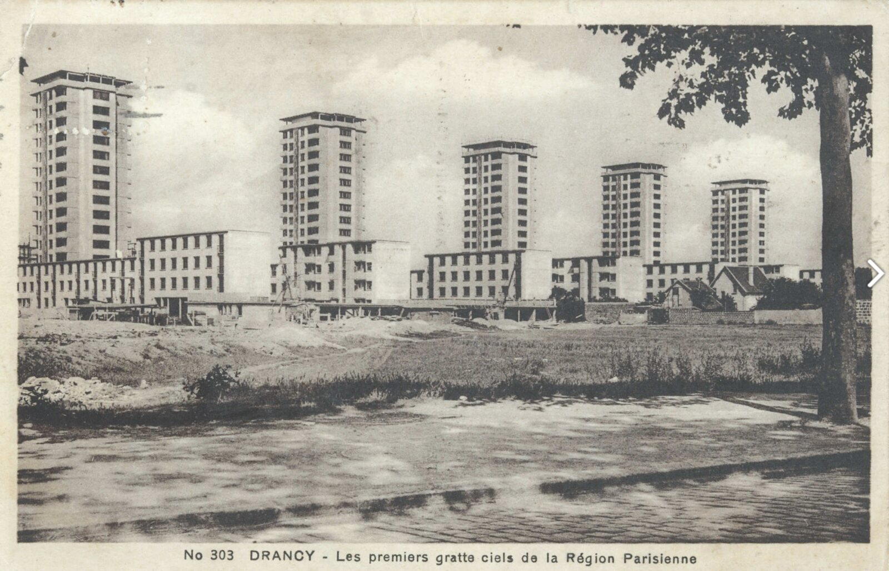
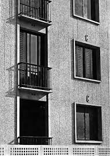
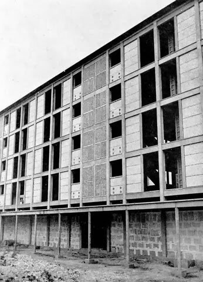
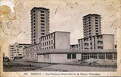
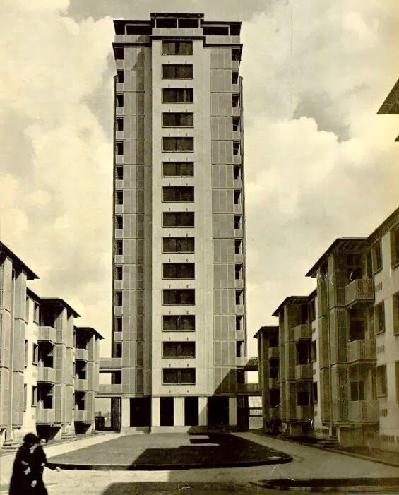
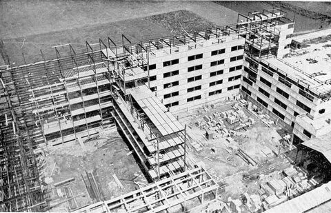
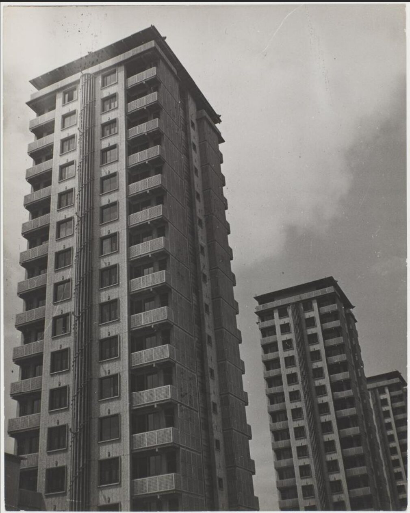
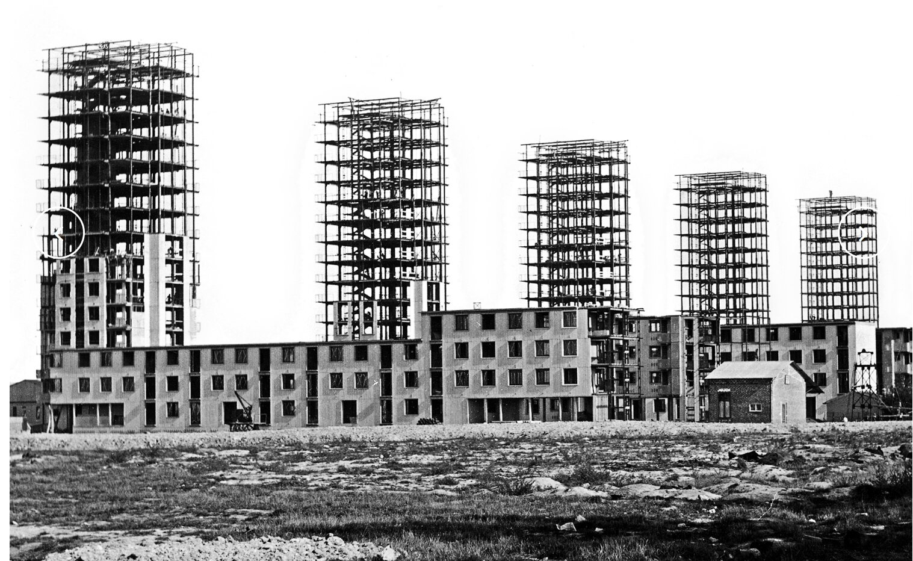

Alveare Architecture — Étude de cas patrimoine moderne

Les huisseries métalliques de l’entre-deux-guerres incarnent un moment charnière de l’architecture moderne : la finesse des profilés laminés a permis d’ouvrir la façade à la lumière, mais elle se heurte aujourd’hui aux exigences de la rénovation énergétique. Comment concilier conservation matérielle, valeur architecturale et confort thermique ? La Cité de la Muette à Drancy, ensemble manifeste de logements collectifs classé au titre des Monuments historiques, condense l’ensemble des arbitrages techniques, doctrinaux et humains que rencontre l’architecte du patrimoine moderne.
1. Une typologie de menuiserie née de la modernité industrielle
1.1 De la verrière industrielle au logement collectif
Le châssis en acier naît dans le sillage de l’architecture du fer et du verre issue de la révolution industrielle. Apparu en Angleterre dès la fin du XIXe siècle dans les serres, halles et ateliers, il pénètre tardivement le logement, après la Première Guerre mondiale. Son succès dans les années 1920-1940 est étroitement lié aux recherches des architectes modernistes, qui apprécient la finesse et la résistance mécanique de ses profilés : ces qualités permettent de maximiser les surfaces vitrées, de faire pénétrer généreusement la lumière et d’offrir des vues panoramiques inédites1.
La fenêtre acier devient ainsi l’un des marqueurs typologiques de l’architecture des années 1930-1940, qu’il s’agisse de la villa moderniste, du logement social expérimental, des écoles, des équipements publics ou des immeubles de rapport Art déco. Elle accompagne les cinq points de l’architecture moderne — notamment la fenêtre en longueur et la façade libre — comme sur l’immeuble Molitor de Le Corbusier (1931-1934), où elle s’insère dans une ossature acier mêlant verre transparent, verre armé et briques de verre Nevada2.
1.2 Caractéristiques constructives
Les anciens châssis métalliques sont composés, dans leur immense majorité, de profilés en acier laminé à chaud, produits à partir de barres d’acier rendues malléables par la chaleur. Pour les réalisations de prestige, des huisseries en bronze, en laiton ou plus rarement en fonte de fer remplaçaient l'acier. À partir de la fin des années 1950 et durant les années 1960, l’aluminium supplantera ces métaux dans la production courante.
Les châssis recevaient en usine une protection contre la corrosion, complétée sur chantier par une mise en peinture. Le vitrage d’origine est un verre étiré (par opposition au verre float actuel), reconnaissable à ses légères ondulations qui font vibrer la lumière — un caractère propre à la période et difficile à reproduire dans une menuiserie de remplacement.
2. La Cité de la Muette : un manifeste de la préfabrication moderne
2.1 Programme et conception
Commandée en 1929 par l’OPHBM de la Seine aux architectes Eugène Beaudouin et Marcel Lods, avec les ingénieurs Vladimir Bodiansky et Eugène Mopin, la Cité de la Muette à Drancy devait initialement compter 1 250 logements. La récession ramène le projet à 720 logements approuvés, dont seuls une partie sera achevée entre 1932 et 1939. L’ensemble comprend cinq tours de seize étages et symbolisent les premiers « gratte-ciels » d’habitation à la française — reliées par des barres basses et un dispositif en peigne3.
Le chantier est conçu de manière scientifique, sur le principe du taylorisme. Trois usines « foraines » installées sur place fabriquent les panneaux de façade en béton vibré, incrustés de galets de marbre. Ces éléments préfabriqués sont acheminés par ponts roulants et monorails, puis assemblés à sec sur une charpente métallique également préparée en usine. Le montage est dressé sans grue ni échafaudage, l’ossature servant elle-même d’étai. Cette technologie est alors à la pointe européenne dans le domaine de la construction.
2.2 La signature de Jean Prouvé
C’est dans ce contexte expérimental que Jean Prouvé conçoit, dès 1932, les menuiseries métalliques et blocs-fenêtres de la cité. Sa contribution est double : il dessine d’abord les moules métalliques servant à couler les panneaux de béton, puis les huisseries elles-mêmes — initialement des fenêtres « à la française » en acier laminé4. Ces menuiseries participent pleinement à l’esthétique et à la matérialité de l’édifice : leur dessin, leurs proportions et leur intégration aux panneaux préfabriqués font partie intégrante de la composition architecturale.
2.3 Une mémoire stratifiée
La valeur patrimoniale de la Cité de la Muette est triple. Architecturale et technique d’abord : laboratoire de la préfabrication lourde et de la pensée fonctionnaliste, elle annonce les recherches que Beaudouin et Lods prolongeront à la Maison du Peuple de Clichy (1937-1939). Sociale ensuite, en tant qu’expérimentation pionnière du logement bon marché. Mémorielle enfin : le site fut camp d’internement et de déportation des Juifs de France durant la Seconde Guerre mondiale. Le classement au titre des Monuments historiques (2001) s’inscrit dans cette épaisseur de significations, qui interdit toute lecture purement thermique du bâtiment5.
3. Le dilemme de la rénovation : conservation contre confort
3.1 Une première campagne arrêtée par l’État
Dès 1955, lors d’une première campagne de ravalements menée avec la participation de Marcel Lods lui-même, les huisseries métalliques à la française projetées par Prouvé sont remplacées par des menuiseries en bois. L’étanchéité est revue dans chaque appartement. La cité subit ainsi une première érosion de sa matérialité d’origine.
À la fin des années 1990, une nouvelle réhabilitation prévoit cette fois le remplacement des menuiseries par des châssis PVC, dans le but d’assurer aux locataires un confort thermique et acoustique conforme aux attentes modernes. La décision est interrompue par le ministère de la Culture, qui engage le classement de l’ensemble : l’incompatibilité du PVC avec le caractère architectural est jugée rédhibitoire6.
Le statu quo qui s’ensuit a un coût humain : environ la moitié des 466 habitants de la cité demeurent dans des logements d’une ou deux pièces qualifiés d’« inconfortables », privés de l’amélioration thermique et acoustique initialement programmée. La philosophe Françoise Choay parle alors de « bureaucratisation culturelle » figeant l’édifice en relique sans concertation avec les habitants. Le débat dépasse largement la technique : il met en tension la valeur cognitive et artistique de l’œuvre, la valeur d’usage et de décence du logement, et la valeur mémoriale du lieu.
3.2 La campagne 2024-2027 : restaurer plutôt que remplacer
Sélectionnée par le Loto du patrimoine en 2024, la Cité de la Muette fait aujourd’hui l’objet d’un programme de restauration en quatre phases conduit jusqu’en 2027, sous le contrôle scientifique et technique de la DRAC et l’approbation des Architectes des Bâtiments de France7 :
- Phase 1 — Travaux intérieurs : mise en sécurité incendie, réfection des halls et cages d’escalier, fusion d’appartements pour créer 40 logements T3, améliorations thermiques compatibles avec la protection.
- Phase 2 — Restauration des façades classées et de leurs huisseries Prouvé.
- Phase 3 — Remplacement des menuiseries extérieures des parties communes par des menuiseries acier neuves, reproduisant la matérialité et le dessin d’origine.
- Phase 4 — Réfection de l’isolation et de l’étanchéité des toitures-terrasses.
Le choix de reconstituer les menuiseries dans le même matériau — l’acier — illustre une doctrine désormais établie pour le patrimoine moderne : la matérialité n’est pas un détail mais une composante essentielle de la valeur architecturale. La Charte de Venise (1964) le rappelait déjà : « Les éléments d’intégration seront toujours reconnaissables et représenteront le minimum nécessaire pour assurer les conditions de conservation du monument et rétablir la continuité de ses formes »8.
| « L’ensemble de l’édifice de la Cité de la Muette revêt une importance architecturale significative, particulièrement grâce à ses façades ornées des huisseries conçues par Prouvé. Les travaux envisagés visent à restaurer l’ensemble dans le plus grand respect de son apparence initiale, avec chaque modification soumise à l’approbation de l’ABF. » — Mission Bern / Fondation du patrimoine, 2024. |
|---|
4. Les leviers techniques de l’amélioration énergétique
Les huisseries en acier des années 1930-1940 présentent un paradoxe thermique intéressant : la conductivité de l’acier est élevée, mais la finesse même des profilés limite leur part de déperdition dans le bilan global de la fenêtre. C’est donc le vitrage qui détermine pour l’essentiel la performance énergétique de l’ensemble, et les leviers d’amélioration s’organisent par niveau d’intervention croissante9.
4.1 Ordres de grandeur
| Configuration | Uw indicatif (W/m².K) | Commentaire
patrimonial |
|---|---|---|
| Acier d’origine + simple vitrage | 5,0 à 6,0 | État d’origine — non conforme à la réglementation actuelle |
| Acier d’origine restauré + joints + simple vitrage peu émissif | ≈ 3,0 à 3,5 | Solution la plus respectueuse de la matérialité |
| Acier d’origine + double vitrage mince intégré | 2,0 à 2,5 | Compatible si la feuillure est suffisante (≥ 14 mm) |
| Acier d’origine + double fenêtre intérieure | 1,5 à 1,8 (ensemble) | Conserve l’aspect extérieur intact |
| Menuiserie acier neuve à rupture de pont thermique + double vitrage | 1,1 à 1,4 | Conforme RE2020 — accepté par ABF si dessin restitué |
| Menuiserie PVC ou alu courante | 1,3 à 1,7 | Refusé en zone protégée — profils trop épais |
Valeurs indicatives synthétisées à partir des données Homegrade Brussels, Izi by EDF Renov et Internorm. Une étude thermique projet doit toujours être conduite cas par cas.
4.2 Restauration de l’existant — la voie de référence
Lorsque l’huisserie d’origine est conservable, la restauration est toujours à préférer au remplacement. Elle suppose une séquence éprouvée :
- Décapage (mécanique, chimique ou par sablage en atelier — proscrire la flamme et le pistolet à air chaud, qui brisent les vitrages).
- Élimination de la rouille à la brosse métallique, application d’un dérouillant chimique ou inhibiteur.
- Greffe d’éléments de section équivalente par soudure, remplacement des charnières et crémones défaillantes.
- Métallisation à chaud (couche de zinc) en atelier pour une durabilité longue.
- Une couche d’antirouille puis deux couches fines de peinture de finition pour métal.
- Réfection des mastics et joints souples — joints à coller de 1 à 2 mm, ou joints métalliques en bronze phosphoreux plus durables.
4.3 Amélioration du vitrage à châssis conservé
Trois solutions permettent d’améliorer la performance sans toucher au dessin de la façade :
- Simple vitrage peu émissif feuilleté : remplace le verre d’origine sans modification de la feuillure. Deux fois plus isolant qu’un simple vitrage classique, particulièrement adapté aux fenêtres à petites divisions où le double vitrage imposerait des faux-meneaux collés.
- Double vitrage mince dans le châssis existant : possible si le profilé est suffisamment large pour recevoir un vitrage de 14 mm (contre 24 mm pour un double vitrage standard). Performance Ug ≈ 1,0 W/m².K, soit trois fois mieux qu’un simple vitrage. Nécessite la fixation d’une parclose métallique fine.
- Double fenêtre intérieure : pose d’un second châssis (acier, aluminium ou bois) à l’intérieur de la baie, à quelques centimètres en retrait. La fenêtre patrimoniale reste visible et fonctionnelle, le second châssis assure l’étanchéité et le confort thermo-acoustique. C’est la solution la moins invasive — celle que les ABF acceptent le plus volontiers sur les édifices protégés.
4.4 Le remplacement à l’identique : un acier neuf pour l’acier ancien
Lorsque la corrosion est trop avancée, lorsque les profilés ont foisonné ou que les vitrages d’origine ont déjà disparu, le remplacement devient nécessaire. La doctrine actuelle, illustrée par le chantier de la Muette, exige alors le maintien du matériau : acier laminé pour acier laminé. Les industriels spécialisés (Forster, Jansen, Janneau) proposent désormais des profilés acier à rupture de pont thermique associant un isolant central et des sections aussi fines que les originaux. Ces systèmes permettent d’atteindre des Uw inférieurs à 1,4 W/m².K tout en restituant le dessin des huisseries historiques10.
| À proscrire en contexte protégé : le PVC blanc standard, l’aluminium courant non patrimonial, et le bois lorsqu’il rompt la continuité matérielle avec l’architecture moderne d’origine. L’épaisseur de ces profils est mécaniquement incompatible avec la finesse des sections acier laminé. |
|---|
5. Cadre réglementaire et procédural
5.1 Du PLU au CRMH
Pour un bien classé Monument historique, toute modification des menuiseries extérieures requiert l’accord du préfet de région, après instruction par la Conservation régionale des Monuments historiques (CRMH) au sein de la DRAC. La procédure suit une séquence précise : notification de la CRMH, concertation avec les services de l’État, avant-projet définitif (APD), puis demande d’autorisation via le formulaire Cerfa n° 13459. Le délai d’instruction est de six mois11.
Pour un bien inscrit ou situé dans le périmètre de protection d’un MH (rayon de 500 m en co-visibilité), une autorisation d’urbanisme reste requise (permis de construire ou déclaration préalable), et l’avis de l’Architecte des Bâtiments de France conditionne l’autorisation. Le règlement d’architecture local précise typologies, matériaux et teintes admis. Toute exécution sans autorisation expose à la dépose forcée des menuiseries aux frais du propriétaire.
5.2 Le régime dérogatoire de la rénovation énergétique
La loi Climat et Résilience et ses arrêtés d’application (audit énergétique réglementaire, article L. 126-28-1 du CCH) prennent en compte les « contraintes techniques, architecturales ou patrimoniales » propres aux édifices protégés. L’arrêté audit énergétique précise que les propositions de travaux « doivent être compatibles avec les servitudes prévues par le Code du patrimoine » et autorise un niveau de performance dérogatoire lorsque les meilleures techniques disponibles ont été mobilisées12.
Concrètement :
- Les Monuments historiques classés ou inscrits ne sont pas soumis au DPE (art. R. 126-15 e) du CCH).
- Les passoires thermiques classées F ou G échappent à l’interdiction de location lorsque les travaux modifieraient significativement l’architecture protégée.
- Une rénovation peut être qualifiée de performante dès lors qu’elle fait gagner deux classes au DPE, même sans atteindre la classe B.
- Les subventions du ministère de la Culture peuvent atteindre 40 % du coût des travaux pour un bien inscrit, 50 % pour un bien classé, cumulables avec MaPrimeRénov’, les CEE, l’éco-PTZ et la TVA réduite sous conditions.
6. Enseignements pour la pratique
La Cité de la Muette n’est pas un cas isolé. Les principes qu’elle met en lumière s’appliquent à l’ensemble des immeubles collectifs de l’entre-deux-guerres dotés de menuiseries acier — HBM parisiennes de la ceinture des Maréchaux, immeubles Art déco, ensembles sociaux modernistes, mais aussi équipements transformés en logements (anciens ateliers, écoles désaffectées). Cinq enseignements se dégagent.
Hiérarchiser l’intervention
La règle d’or est claire : restaurer avant de remplacer, améliorer le vitrage avant de toucher au châssis, doubler avant de déposer. Cette hiérarchie protège à la fois la valeur patrimoniale et la réversibilité de l’intervention.
Documenter avant d’agir
Un relevé exhaustif des huisseries (typologie, sections, quincaillerie, vitrages, fixations, peintures), accompagné d’une couverture photographique et de prélèvements ponctuels (analyse stratigraphique des peintures), constitue le socle de toute campagne. La Charte de Venise impose que « les travaux de conservation, de restauration et de fouilles soient toujours accompagnés d’une documentation précise sous forme de rapports analytiques et critiques illustrés de dessins et de photographies ».
Anticiper le risque de condensation
Améliorer l’étanchéité d’une fenêtre sans repenser la ventilation déplace le point de rosée à l’intérieur : la condensation migre vers les maçonneries adjacentes, où elle peut provoquer pathologies de surface, moisissures et dégradations des enduits anciens. La rénovation des menuiseries doit toujours être pensée avec un volet ventilation (VMC, entrées d’air dans la traverse haute si l’ABF l’autorise, sensibilisation des occupants).
Choisir des partenaires spécialisés
La restauration de menuiseries acier patrimoniales relève d’entreprises qualifiées (qualification Qualibat 3833 ou équivalent, références MH), capables de combiner serrurerie traditionnelle, mise en peinture en atelier et installation respectueuse des supports. Pour le remplacement à l’identique, les profileurs spécialisés (Forster, Jansen, Janneau gamme Patrimoine) restent les fournisseurs de référence.
Faire dialoguer maîtrise d’ouvrage et habitants
Le cas de la Muette montre que l’oubli de la valeur d’usage est aussi destructeur que l’oubli de la valeur patrimoniale. Une réhabilitation réussie articule explicitement les deux : phasage permettant aux habitants de rester dans les lieux, association des conseils syndicaux ou amicales de locataires au choix des solutions techniques, communication transparente sur les arbitrages.
Conclusion — Le patrimoine moderne est un patrimoine entier
Pendant longtemps, les édifices des années 1930-1940 ont été considérés comme des « bâtiments de second rang », jugés à l’aune de leur seul confort. Le classement de la Cité de la Muette en 2001, puis sa restauration patrimoniale en cours, marquent une bascule doctrinale décisive : l’architecture moderne, y compris dans son détail constructif, est désormais reconnue comme patrimoine à part entière. Les menuiseries en acier de Jean Prouvé, longtemps remplacées sans état d’âme, sont aujourd’hui restituées à l’identique.
Pour l’architecte chargé d’une rénovation énergétique sur le bâti moderne, cela impose un changement de posture : penser la performance thermique comme un paramètre du projet patrimonial, et non l’inverse. C’est en restaurant, en doublant, en réparant — et en remplaçant seulement lorsque la matière est irrécupérable, alors dans le même matériau et le même dessin — que l’on rend à ces édifices leur intégrité tout en assurant aux habitants un logement décent. La Cité de la Muette aura mis près d’un siècle à voir reconnaître la valeur de ses huisseries acier ; il appartient désormais à la profession d’appliquer cette leçon, plus largement, à l’ensemble des immeubles collectifs de l’entre-deux-guerres.
_________________________________
1Homegrade Brussels, « Fenêtre ancienne en acier — Entretien et amélioration », brochure patrimoine, homegrade.brussels.
2Fondation Le Corbusier, « Immeuble locatif à la porte Molitor, Paris, 1931-1934 », fondationlecorbusier.fr.
3Cité de l’architecture et du patrimoine, fiche « Cité de la Muette, Beaudouin et Lods, 1931-1934 » ; voir aussi histoiredesarts.culture.gouv.fr.
4Fonds Jean Prouvé, « Menuiseries métalliques et blocs-fenêtres, Cité de la Muette, Drancy, 1932 », jeanprouve.com.
5Fondation du patrimoine, « Cité de la Muette — Drancy », dossier projet 2024, fondation-patrimoine.org.
6Anne Bourgon, « La Cité de la Muette à Drancy », ICOMOS, actes du colloque, publ.icomos.org.
7Citoyens.com, « Toujours habitée, la Cité de la Muette sélectionnée par le Loto du patrimoine », 4 septembre 2024, citoyens.com.
8ICOMOS, Charte internationale sur la conservation et la restauration des monuments et des sites (Charte de Venise), 1964, icomos.org.
9Homegrade Brussels, « Comment améliorer les performances des anciennes fenêtres », homegrade.brussels.
10Jansen, « Rénovation — systèmes de profilés en acier pour la protection des monuments », jansen.com ; Maison Janneau, gammes Patrimoine, maison-janneau.com.
11Check & Visit, « Rénovation énergétique d’un monument historique », blog.checkandvisit.com.
12Ministère de la Culture, « La performance énergétique dans les bâtiments d’intérêt patrimonial », culture.gouv.fr.
Galerie du projet






